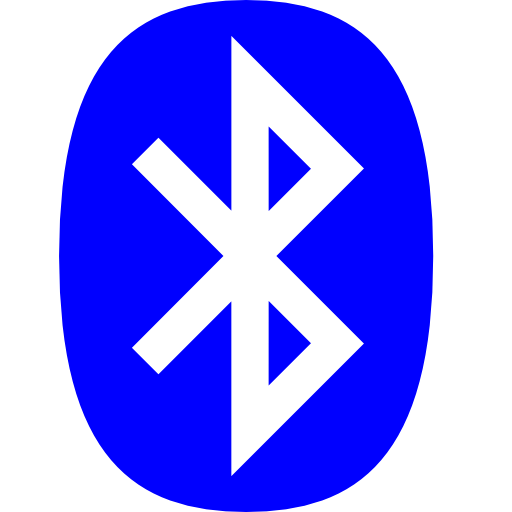
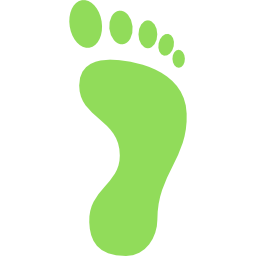

Commands Interface

Connetti con SmartInsole
Effetturare Calibrazione
Connetti con SmartInsole
Effetturare Calibrazione

Connect with STM32
*Bluetooth connection is required to connect dashsboard with STM32.
Valutazione dinamica
Grafico di apprendimento
Download
Valore ideale (0) = [Avampiede 55%,Retropiede 45%]. A partire dal valore nominale viene indicato di quanto, in percentule, viene applicata un forza maggiore sull'Avampiede(valore positivo delle ordinato) o alternativamente sul Retropiede (valore negativo delle ordinate).
Valutazione dinamica
Numero Passi
0
Passi corretti
0
Passi sbagliati
0
*Bluetooth connection is required to connect dashsboard with STM32.
Valutazione statica - Heatmap
0
100

Valutazione Dinamica (Storico)
| Time | Retro % | Avamp % |
|---|---|---|
| Valori ideali | 45 | 55 |
Valutazione Statica (Storico)
| Time | Retro (%) | Avamp (%) | Retro (kg) | Avamp (kg) | Durata (s) |
|---|---|---|---|---|---|
| Valori ideali | 45 | 55 | - | - | 51 |